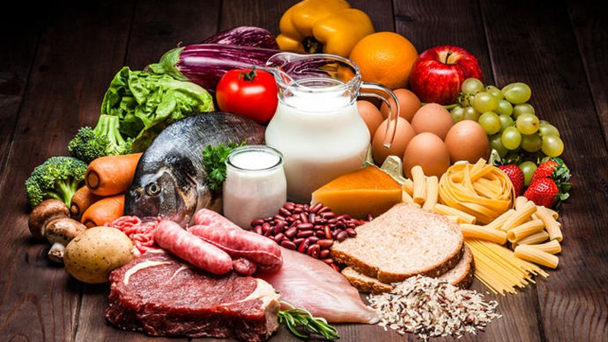

El mejor servicio
Raíces de Sabor: Fundación de un Restaurante Mexicano Innovador desde 1977
Fundado en 1977, nuestro restaurante nació con el propósito de ofrecer un espacio cálido y acogedor para las familias mexicanas, donde pudieran disfrutar de los sabores auténticos de México en un ambiente familiar. Desde entonces, hemos trabajado cada día para combinar la rica tradición culinaria de nuestro país con la innovación, creando nuevas experiencias gastronómicas que sorprendan tanto a las generaciones más jóvenes como a los más grandes. A lo largo de los años, hemos adaptado nuestro menú para incorporar ingredientes frescos y técnicas modernas, sin perder de vista las recetas tradicionales que han sido parte de nuestra historia. Hoy, seguimos comprometidos con ofrecer un lugar donde cada visita sea una celebración de la familia, la cultura y la evolución constante de la cocina mexicana.
Con el objetivo de hacer llegar nuestra auténtica comida mexicana a más hogares, hemos expandido nuestros servicios al mundo digital, ofreciendo la opción de pedir nuestros platillos por delivery. Ahora, los sabores que han acompañado a generaciones de familias mexicanas están a solo un clic de distancia, brindando la misma calidad, frescura y amor en cada platillo, directamente en la comodidad de tu hogar.
Productos 100% Mexicanos: Cuidando Cada Detalle en Cada Plato
En nuestro restaurante, cada detalle cuenta. Desde 1977, nos hemos comprometido a ofrecer productos 100% mexicanos, seleccionados con esmero para garantizar una experiencia gastronómica auténtica y memorable. Desde el grano de elote más fresco hasta los mejores vinos de la región, nos aseguramos de que cada ingrediente cumpla con los más altos estándares de calidad. Nuestra pasión por la cocina mexicana se refleja en cada platillo de nuestro menú, donde especificamos con detalle los ingredientes y las preparaciones tanto de manera presencial como en nuestro servicio en línea, para que cada comensal, sin importar su preferencia, disfrute de una experiencia personalizada. Ya sea en el restaurante o desde la comodidad de su hogar, cuidamos cada paso para brindar un sabor auténtico que satisface todos los gustos.
